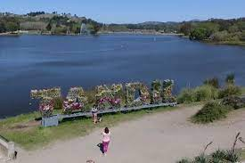
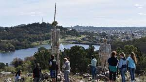
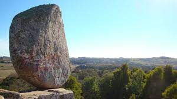

sobre la entrada de villa del lago en un camino se ascenso serpentenate, se encuentra emplazada las esculturas de Don quijote de la Mancha y Sancho panza, es un sector dodne ademasse ubica el molino de viento con una incleible vista al lago del fuerte de detras. la obra de arte que hace homenaje a la obra literaria de Miguel de Cervantes (siglo XVII) fue realizada por el tandilense Vinsennau Alberto, junto a Ernesto Santiago y Gustavo Andersen. Un atractivo que no se puede dejar de conocer.
Turismo en Tandil

Localizado en la provincia de Buenos Aires , Tandil es un municipio cuya superficie, población, altitud y otra información importante se proporciona a continuación. Para todos sus procedimientos administrativos, puede dirigirse al gobierno municipal de Tandil en la dirección y horarios indicados en esta página, o contactar a la recepción del intendente por teléfono o por correo electrónico según su preferencia y datos disponibles
Don Quijote

Centinela

¿Que es? Es un enorme granito de más de 70 toneladas y unos 7 metros de altura que se apoya sobre una base proporcionalmente pequeña, que fue tomando su forma a través de milenios y el efecto de las lluvias, los vientos y del sol. Si se observa con detenimiento, se puede apreciar que una de sus caras es cóncava y alisada, producto de fuertes vientos; la otra cara es convexa y rugosa, por estar de cara al sol y menos expuesta a los vientos.